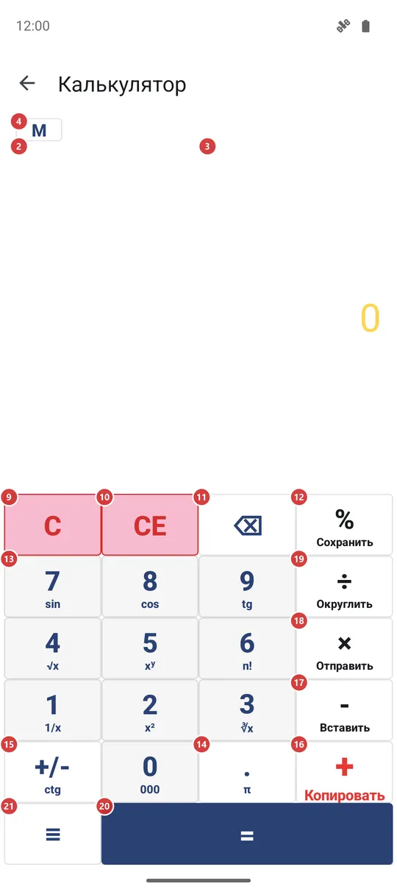
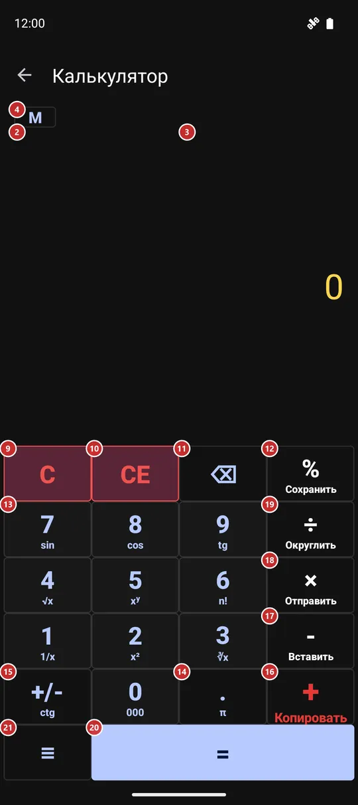

Калькулятор
Для чего этот экран
Калькулятор для быстрых подсчётов, не выходя из приложения. Он показывает ответ прямо во время ввода, хранит историю, которую можно скопировать, отправить или сохранить, а кнопки памяти и функции доступны из меню.


Порядок действий
- Наберите первое число цифрами 13 и десятичной точкой 14. Число появится в результате 3. «Удалить последний символ» 11 убирает последнюю цифру.
- Нажмите знак действия: «Сложить» 16, «Вычесть» 17, «Умножить» 18 или «Разделить» 19 - и наберите второе число. Пока вы его вводите, в истории 2 уже виден ответ, который даст «Равно».
- Нажмите «Равно» 20, чтобы завершить пример. Он попадёт в историю 2, а касание результата 3 копирует число.
- «Процент» 12 и «Сменить знак» 15 работают с числом, которое вы вводите. «Очистить ввод» 10 стирает только это число, а «Очистить» 9 начинает пример заново.
- Чтобы вести накопительный итог, покажите кнопки памяти 4 и пользуйтесь M+ 5, M- 6, MR 7 и MC 8. Индикатор 1 подскажет, что хранится в памяти.
- Удерживайте кнопку, чтобы выполнить её второе действие: оно подписано мелким шрифтом под значком. Остальное - функции, отправка, сохранение истории и настройки - находится в меню 21.
- Если на экране написано, что калькулятор выключен, нажмите 23: откроются настройки, где его можно включить.
Элементы
Результат и история
1Индикатор памятиПоказывает число, хранящееся в памяти, чтобы вам не приходилось его помнить.
Он выглядит как «M» и число и находится слева от кнопки M. Индикатор виден, только пока в памяти не ноль, и пропадает после очистки памяти.
2ИсторияПеречисляет готовые примеры, а внизу - тот, что вы сейчас вводите.
Каждый готовый пример занимает одну строку, например 125+37=162. Пока вы вводите второе число, в последней строке уже виден ответ, который даст «Равно», - нажимать ничего не нужно. Если у примера пока нет ответа, например вы набираете делитель и в нём ещё ноль, строка просто остаётся прежней.
История сохраняется между запусками. Любую её часть можно выделить долгим нажатием и скопировать. Сведите или разведите два пальца, чтобы уменьшить или увеличить текст: размеров пять, выбранный запоминается. С клавиатурой «Крупные кнопки» история сжимается до нескольких строк.
Всю историю можно отправить или сохранить в файл из меню.
- Отмена
- «Очистить историю» в меню удаляет все сохранённые строки. Вернуть их нельзя, поэтому сначала сохраните историю, если она может понадобиться.
3РезультатПоказывает число, которое вы вводите, а затем ответ.
Нажмите, чтобы скопировать число в буфер обмена: копия приходит без разделителей разрядов, поэтому её удобно вставлять куда угодно. Удерживайте, чтобы вставить число из буфера. Если в буфере целый пример, например 12*7+5, калькулятор сам его посчитает и запишет ответ в историю.
Длинные числа уменьшаются, чтобы поместиться. Если включено «Разделять разряды», между каждыми тремя цифрами стоит запятая. Когда у примера нет ответа, здесь появляется сообщение, например «Делить на ноль нельзя.»; «Очистить» или любая цифра его убирает.
Кнопки памяти
4Показать или скрыть кнопки памятиПоказывает или скрывает ряд из четырёх кнопок памяти.
Кнопки памяти не мешают, пока вы ими не пользуетесь. Нажмите M один раз, чтобы показать ряд, и ещё раз, чтобы скрыть. Калькулятор запоминает, был ли ряд открыт, и при следующем запуске покажет его так же.
5Прибавить к памятиПрибавляет число с экрана к памяти.
Подходит для накопительного итога по нескольким примерам: посчитали одну сумму, нажали M+, перешли к следующей. Число на экране не меняется, а индикатор показывает новый итог в памяти. Память сохраняется, поэтому она остаётся и после закрытия калькулятора.
6Вычесть из памятиВычитает число с экрана из памяти.
Это противоположность M+: используйте, когда какую-то сумму нужно убрать из итога. Число на экране не меняется, а индикатор показывает новый итог.
7Вызвать из памятиВыводит на экран число, хранящееся в памяти.
Число подставляется так, будто вы набрали его сами, поэтому его можно использовать и как первое, и как второе число примера. Сама память не меняется.
8Очистить памятьСбрасывает память в ноль.
Пригодится, когда накопительный итог подсчитан и хочется начать новый. Индикатор памяти исчезает.
- Отмена
- Сохранённое число теряется, вернуть его нельзя. Если хотите увидеть его ещё раз, сначала нажмите MR.
Клавиатура
9ОчиститьСтирает весь пример и начинает с нуля.
Сбрасываются набираемое число, выбранное действие и незаконченная строка внизу истории, а также сообщение об ошибке. История и память остаются нетронутыми.
- Сочетание клавиш
- Esc
10Очистить вводСтирает только вводимое число, пример сохраняется.
Пригодится, если вы ошиблись во втором числе: первое число и действие остаются, и вы можете набрать второе заново. Если действие ещё не выбрано, она просто возвращает число к 0.
11Удалить последний символУбирает последнюю набранную цифру.
Удобна при опечатке. Если на экране готовый ответ, а не набираемое число, одно нажатие сбрасывает его в 0.
- Сочетание клавиш
- Backspace
12ПроцентПревращает число в процент так, как вы, скорее всего, и имеете в виду.
После сложения или вычитания берёт этот процент от первого числа: 200 + 10 % даёт 20, и «Равно» прибавит к 200 эти 20. В остальных случаях делит число на 100. Удерживайте кнопку, чтобы сохранить историю в файл, как это делает «Сохранить историю» в меню.
13Цифры 0-9Набор числа: десять кнопок от 0 до 9 - три ряда по три и 0 внизу.
Каждое нажатие добавляет цифру к числу на экране. Лишние нули в начале отбрасываются: 007 превращается в 7. Работает и физическая клавиатура: цифры верхнего ряда или цифровой блок.
У каждой цифры есть второе действие при удержании, оно подписано мелким шрифтом под цифрой: 1 - 1/x, 2 - квадрат, 3 - кубический корень, 4 - квадратный корень, 5 - возведение в степень, 6 - факториал, 7 - синус, 8 - косинус, 9 - тангенс. Удержание 0 вводит сразу три нуля - удобно для тысяч. Каждое из этих действий делает то же, что и одноимённая строка в окне функций.
- Сочетание клавиш
- 0 / 1 / 2 / 3 / 4 / 5 / 6 / 7 / 8 / 9
14Десятичная точкаДобавляет к числу десятичную точку.
В числе может быть только одна точка, поэтому второе нажатие ничего не делает. После знака действия или в новом примере точка начинает число с 0.. Удерживайте кнопку, чтобы ввести число пи.
- Сочетание клавиш
- .
15Сменить знакПереключает число между положительным и отрицательным.
Нажимайте до ввода числа или после. Ноль она не меняет. Удерживайте кнопку, чтобы получить котангенс (ctg) числа в градусах.
16СложитьПрибавляет следующее число к предыдущему.
Нажмите её после первого числа и наберите второе. В длинной цепочке пример считается слева направо: знак действия после второго числа сначала считает уже набранную часть и продолжает с ответом. Удерживайте кнопку, чтобы скопировать результат. На клавиатуре то же, что нажатие, делает клавиша плюс.
17ВычестьВычитает следующее число из предыдущего.
Используйте её между двумя числами. Чтобы ввести отрицательное число, лучше нажать «Сменить знак». Удерживайте кнопку, чтобы вставить число или пример из буфера обмена.
- Сочетание клавиш
- -
18УмножитьУмножает предыдущее число на следующее.
Нажимайте между двумя числами. Удерживайте кнопку, чтобы отправить результат в другое приложение через системное меню отправки.
- Сочетание клавиш
- *
19РазделитьДелит предыдущее число на следующее.
Нажимайте между двумя числами. Деление на ноль не имеет ответа, поэтому пока вы набираете число, история молчит, а сообщение «Делить на ноль нельзя.» появляется только после «Равно». Тогда же калькулятор показывает шуточное окно, похожее на системное предупреждение об удалении данных: это розыгрыш, ничего не удаляется. Его единственная кнопка «Подробнее..» открывает в браузере страницу о Дне дурака.
Удерживайте кнопку, чтобы округлить число на экране до целого.
- Сочетание клавиш
- /
20РавноЗавершает пример и показывает ответ.
Готовый пример попадает в историю. Если сразу нажать «Равно» ещё раз, последнее действие повторится: после 5 + 3 = 8 следующее нажатие даст 11, потом 14. Как только вы начнёте новое число, повтор сбрасывается.
- Сочетание клавиш
- Enter / =
Когда калькулятор выключен
22Калькулятор выключенСообщает, что калькулятор выключен в настройках.
Если калькулятор выключен в настройках, вместо клавиатуры вы видите короткое сообщение. Оно встретится, например, при запуске из виджета на главном экране. Пока вы не включите калькулятор, он не работает.
23Открыть настройкиОткрывает настройки на вкладке, где калькулятор включается.
Кнопка ведёт на вкладку «Управление» в настройках; переключатель калькулятора находится в разделе «Дополнительные программы и сценарии». Включите его и вернитесь на этот экран - клавиатура уже будет на месте. Перезапуск не нужен.
Окно функций
24ФункцияПоказывает пятнадцать дополнительных функций в два столбца.
Выберите функцию - окно закроется. Большинство из них сразу применяются к числу на экране: sin, cos, tg и ctg (в градусах), квадратный и кубический корень, квадрат, 1/x, log, ln и n!. Степень (xʸ), DIV (целочисленное деление) и mod (остаток) - действия между двумя числами: нажмите одно из них, наберите второе число и нажмите «Равно». Строка «π» выводит на экран число пи. Если для числа функция не имеет ответа, например корень из отрицательного или факториал от 1.5, появится сообщение об ошибке. Те же функции доступны удержанием цифр.
Окно настроек калькулятора
25Разделять разрядыСтавит запятую между каждыми тремя цифрами, чтобы длинные числа читались легче.
Когда переключатель включён, 1234567 выглядит как 1,234,567. Разряды разделяются по обе стороны от точки, и меняется только вид числа. В скопированном числе запятых нет. По умолчанию включено.
26Размер результатаЗадаёт размер результата - от мелкого до очень крупного.
Перетащите ползунок, чтобы выбрать наибольший размер результата. Очень длинные числа всё равно уменьшаются и умещаются в строку. По умолчанию выбран средний размер.
27КлавиатураВыбирает вид клавиатуры: «Обычная», «Крупные кнопки» или «Компактная, справа внизу».
«Обычная» - стандартная раскладка. «Крупные кнопки» занимают почти весь экран и сокращают историю до нескольких строк - так удобнее попадать крупными пальцами. «Компактная, справа внизу» собирает кнопки поменьше в правом нижнем углу, чтобы до всех достать одним большим пальцем.
28ОтменаЗакрывает окно без сохранения выбора.
Ничего не меняется: настройки остаются такими, какими были до открытия окна.
29ПрименитьСохраняет три настройки и закрывает окно.
Калькулятор сразу переходит на новые настройки, они сохраняются на будущее.